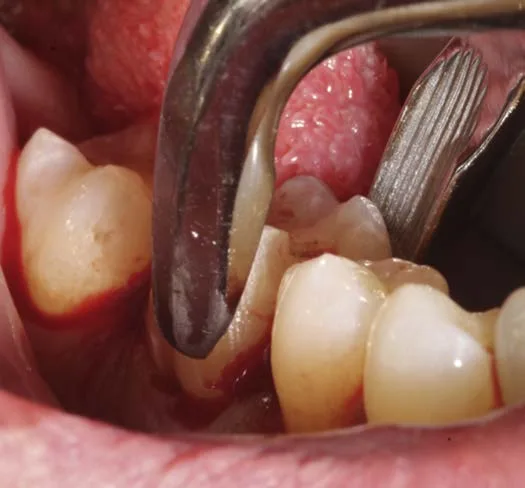
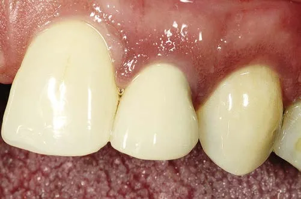

نسخه استخراجشده؛ ترجمه یا تأیید علمی انجام نشده است. وضعیت: captured
صادقانه باید گفت: متغیرهای زیادی در تعیین اینکه محل پیوند ساکت چه زمانی برای کاشت ایمپلنت ترمیم شده وجود دارد. آمادگی محل به اندازهی نقص، نوع مادهی پیوند، استفاده از ممبران و خونرسانی ناحیه بستگی دارد؛ یعنی یک عدد واحد برای همه وجود ندارد.
ولی بازههای راهنما مشخصاند:
ساکت بدون پیوند: ترمیم معمولاً ۳ تا ۶ ماه طول میکشد، بسته به اندازهی دندان، تعداد ریشهها و میزان تروما حین کشیدن.
محل پیوندشده: معمولاً ۴ تا ۸ ماه.
و یک استثنای مهم: در تکنیک socket seal، انتقال گرافت کامپوزیت با لایهی پریوستئال دستنخورده عروقیشدن مجدد را تسریع میکند و ممکن است زمان ترمیم را کاهش دهد — در نتیجه ورود مجدد ممکن است در ۴ تا ۵ ماه انجام شود و کاشت ایمپلنت با قطر ایدهآل اغلب ممکن گردد.
به عبارت آخر دقت کن: «قطر ایدهآل». یعنی کیفیت پیوند نه فقط بر زمان بلکه بر گزینههای در دسترس اثر میگذارد — پیوند بهتر یعنی ایمپلنت بهتر، نه فقط ایمپلنت زودتر.

حالا کل این یونیت را بهصورت یک زنجیرهی تصمیم ببین — و توجه کن که هر حلقه، گزینههای حلقهی بعد را محدود یا باز میکند:
تکنیک کشیدن ← اگر پریوتوم بهدرستی بهعنوان گوه به کار رود و ریشهها سکشن شوند، تیغهی باکال و سپتوم بینریشهای حفظ میشوند.
دیوارههای سالم ← نقص باقیمانده از نوع اینفرابونی است نه دهیسنس — و از یونیت ۱۳ میدانی که ترمیم نقص دیوارهدار بهمراتب بهتر است.
نقص دیوارهدار ← مادهی پیوند سر جایش میماند و میتواند فضا را حفظ کند.
فضای حفظشده ← ابعاد ریج نگه داشته میشود ← قطر ایدهآل ایمپلنت در دسترس میماند و نیازی به بازسازی گستردهتر نیست.
و در جهت معکوس، همین زنجیره هزینهها را هم نشان میدهد: کشیدن پرتروما ← از دست رفتن تیغه ← نقص دهیسنس ← ترمیم آسیبدیده ← فروریختن ابعاد ← نیاز به پیوند گستردهتر یا پذیرش قطر کمتر یا حتی موقعیت نامناسب.
جمعبندی این یونیت در یک جمله: در جراحی ایمپلنت، لحظهی کشیدن دندان بخشی از درمان ایمپلنت است، نه رخدادی پیش از آن. و کسی که این را نداند، هر بار درمان را از نقطهی سختتری شروع میکند.

نوع سؤال: ساخت کلمه · 3 خانه
حروف منبع: ق · ط · ر